Build Event Listener¶
These are blueprints that you can attach to a prefab asset. It allows you to hook into the various build stages of the prefab when it is spawned into the world and modify the spawned actors through your blueprint logic
These are great for applying random materials, changing light colors or your custom game logic etc
In this example, we’ll use the following nested building prefab.
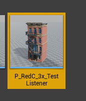The prefab is built using smaller prefabs: ground floor prefab, 3 floor prefabs, a roof prefab and facade decorations prefab
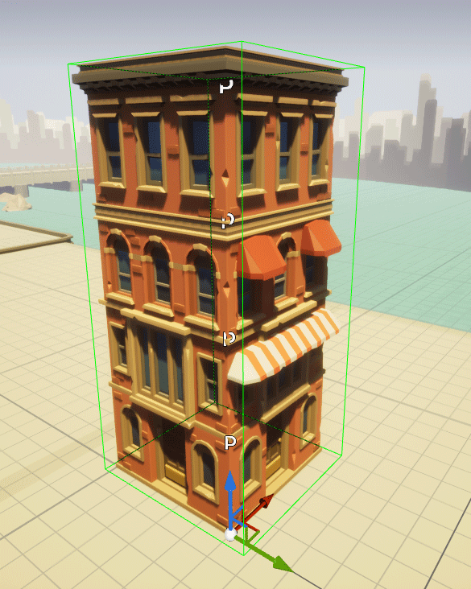The art asset comes with various materials that when applied, changes the look of the building. Instead of recreating the prefab each with a different material, we’ll use blueprints to randomly assign one of the materials so it looks like this
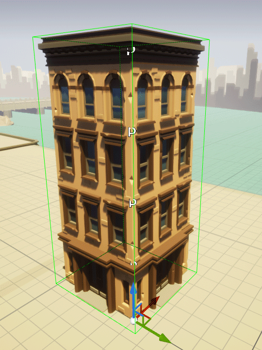Create a Prefabricator Event Listener blueprint
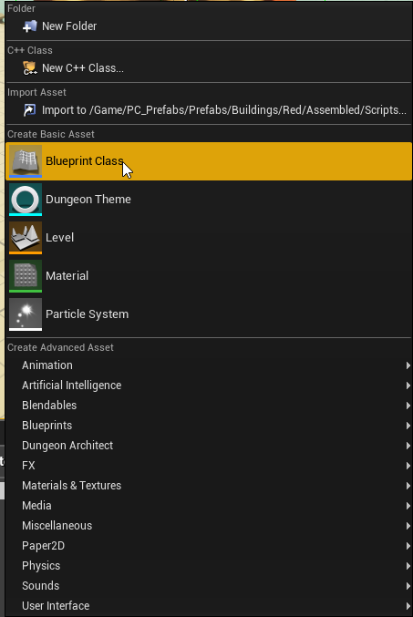 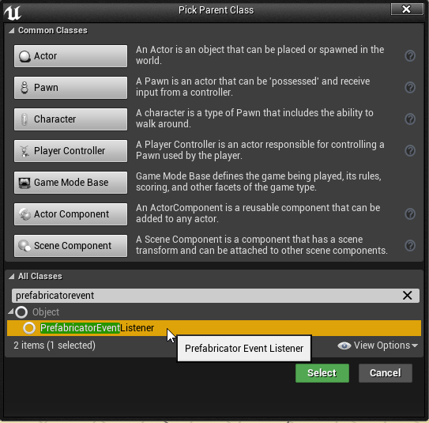 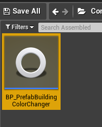Override the Post Spawn function and add your logic here
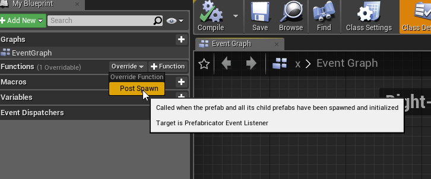There’s a helper function that lets you grab all the child actors (included the nested ones). This can be used to assign the material
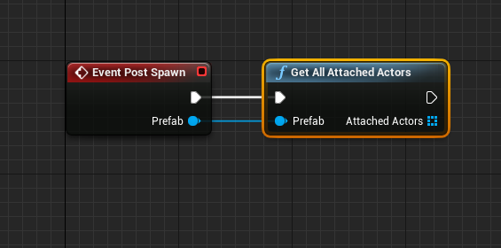Assign this blueprint to all the relavant prefab assets.
Double click the prefab asset to open the properties
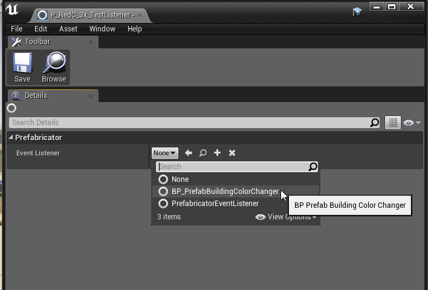Spawning the prefab or randomizing it would now execute your script and pick up the new materials
Sample Blueprint¶
Here are the screenshots of the blueprint used above
Post Spawn¶
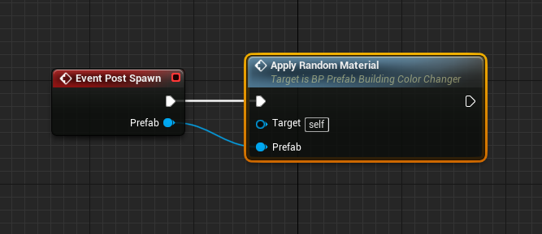Variables: * Materials : Material Interface (Array) * .. image:: /images/build_events/bp/01_vars.png
Populate your materials in this MaterialInterface array
Apply Random Material¶
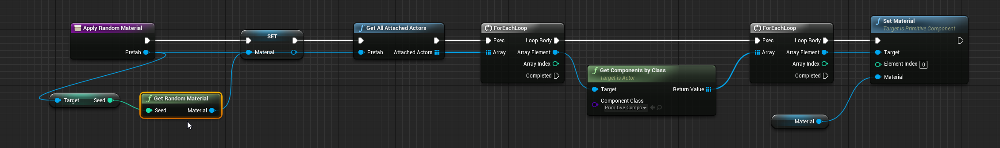Variables: * Material : Material Interface * .. image:: /images/build_events/bp/02_vars.png
Get Random Material¶
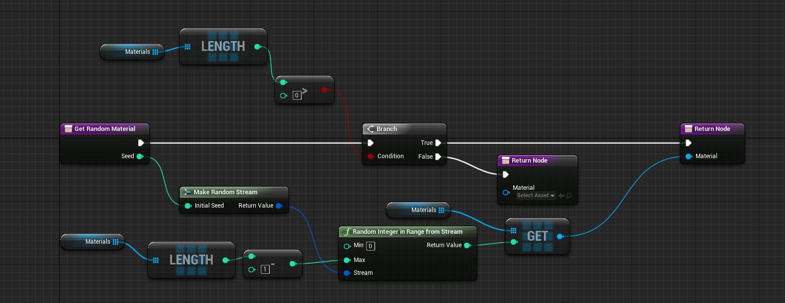You’ve reached the end of the User Guide. Let us know what you build in the forums. [http://prefabricator.io](http://prefabricator.io)